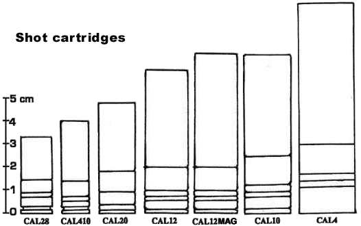

Shot cartridges are still in use in 2020. The principle is simple : the powder load propel a swarm of projectiles in a smoothbore barrel. The multiples projectiles spreading into a growing circular pattern significantly increase the probability of a hit, but at long range only a few projectiles will hit the intended target. The idea worked well on birds or small game, but proved rather ineffective against Kevlar and other ballistic protection. Those rounds are mostly used against soft targets, and are a favorite of cops and security, the large bore making them very potent intimidation tools. But the large smoothbore barrel allows shotguns to fire a wide range of specialty rounds, including some effective even against well-protected targets. Those specialty round are generally not available to the public.
The gauge of a shotgun is the amount of spherical bullets that can be cast with one pound of pure lead. The smaller the number, the larger the bore of the weapon. 410 gauge is an exception to this system. In fact it is a .410 caliber round.
| Caliber CAL28 |
Name Calibre 28 |
Range 3 mètres |
S.R. 2D6+1 |
M.R. 1D6+1 |
L.R. 1D6/2+1 |
Prix des 10 $3 |

NOTES
- As with other firearms, the range given is the Long Range (L.R.). Medium Range (M.R.) is half L.R, and Short Range (S.R.) is a quarter.
RULE FOR SHOT DAMAGES
For each target in the area of effect of the weapon :
- Point Blank or Short Range : Short Range damages in one location.
-Medium Range : Medium Range damages in 1D6/2 adjacent locations.
-Long Range : Long Range damages in 1D6/2 adjacent localisations.